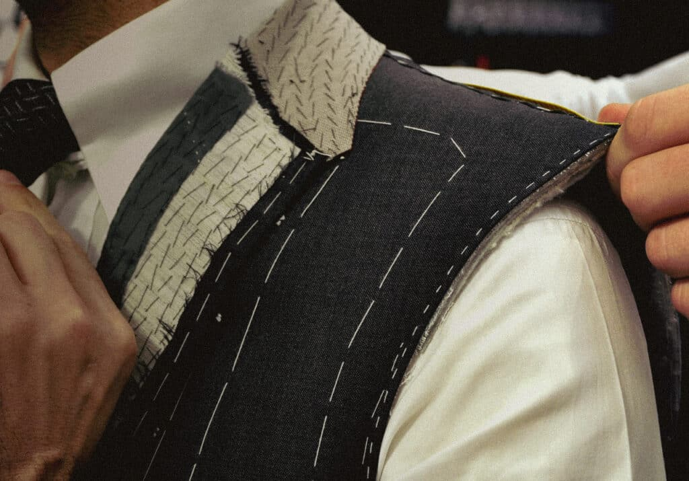
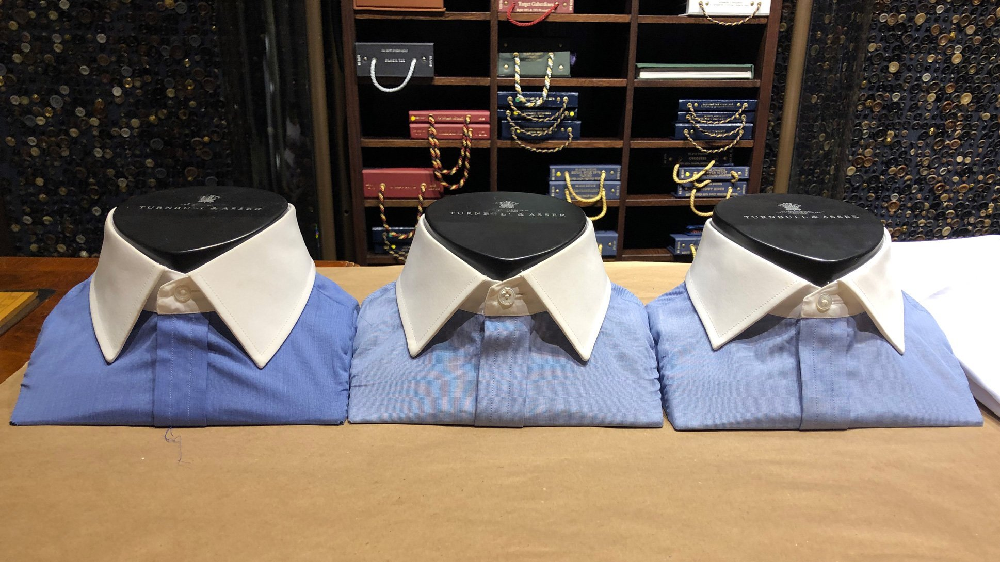
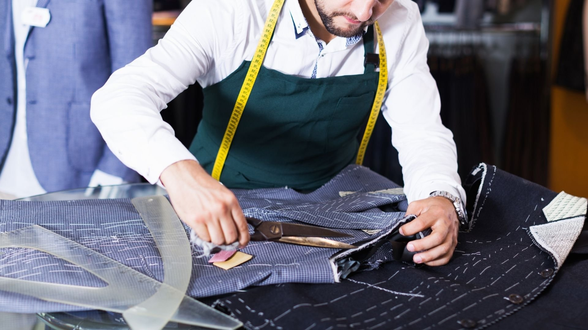

Bespoke Suits
Built entirely from scratch to your measurements, posture, and preference. Full canvas construction, hand-stitched lapels, and cloth sourced from the finest British and Italian mills.
Book a FittingWhat We Offer
Every garment begins with a conversation. From a first bespoke suit to a lifelong wardrobe, we work at the pace and precision the craft demands.
Built entirely from scratch to your measurements, posture, and preference. Full canvas construction, hand-stitched lapels, and cloth sourced from the finest British and Italian mills.
Book a Fitting
A refined fit from a base pattern adjusted to your proportions. Ideal for clients who want a tailored result with a shorter lead time and a more accessible price point.
Book a FittingWedding suits, morning dress, dinner jackets, and tuxedos. Dressed for the moment, built to outlast it.
Book a Fitting
Bespoke dress shirts cut to your collar, cuff, and sleeve length. Trousers with the exact rise, break, and seat you've always struggled to find off the rack.
Book a Fitting
Tailoring existing garments to fit as they should. We also restore and reline vintage and heirloom pieces — coats, suits, and jackets worth preserving.
Get in TouchA private session to assess, edit, and plan your wardrobe with intention. We advise on cloth, colour, and what to commission next — no obligation required.
Book a SessionReady to Begin
No pressure, no commitment. Come in, tell us what you need, and we'll tell you what's possible.